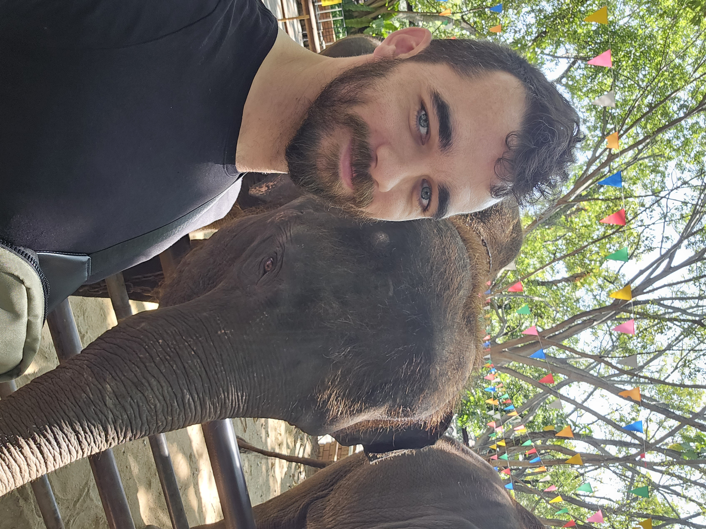

Adam Wentz
adam.k.wentz@gmail.com | 904.236.0514

LinkedIn
GitHub
Dynamic and incredibly passionate team player with a strong background in IT operations, security, and asset
management, and a deep passion for programming and development. Knowledgeable in various relevant technologies.
Proven ability to automate processes, enhance security, deliver quality applications, and provide top-notch customer
service.
Skills
Technical Skills:
C#, Python, SQL, BitBucket, Unity, Git, Okta, Office365, Jira, Security Applications, Vulnerability
Scanning, Exchange, Entity Framework, AWS, Okta, Nunjucks, Active Directory, Azure AD, Single Sign-On (SSO), Meraki,
.NET Core MVC
Soft Skills:
Agile Learning, Analytical Thinking, Team Collaboration, Customer Service, Creative Problem-Solving
Work Experience
Volly
Systems Administrator
Jacksonville, FL | May 2020 - Present
-
Developed, managed, and executed the process to switch from our previous SAST, DAST, and SCA provider to our
current one, which included integrations with BitBucket and Jira to fully automate security scanning, flaw tracking,
and reporting during the SDLC process.
-
As the sole administrator of the organization's Okta account, successfully implemented SAML Single Sign-On (SSO)
for over 80% of applications. Proactively manage and optimize the integration between Okta, local Active Directory,
and Office365, ensuring seamless and secure access to resources for all users.
-
Inherited and single-handedly, remotely upgraded the organization's physical access control system, which involved
host server migration and configuration, as well as discovering all physical access devices in the building and
configuring them to work with the new server and system. This enhanced physical security, application security,
and allowed for more efficient control over physical access.
-
Single-handedly manage the organization's Jira Cloud instance, including creating, administrating, and customizing
several different Jira projects, workflows, automation, and request forms, as well as creating and managing the
administration of various SCRUM boards for several teams.
-
Manage the organization's suite of security applications which handle vulnerability scanning, anti-malware, asset
tracking, and system patching for workstations and servers company-wide.
-
Handle incoming help desk tickets, providing technical support related to systems, hardware, and software to
ensure any user from the CEO to interns experience minimal impact to productivity.
VEERA Medical
Senior VR Developer
Jacksonville, FL | January 2019 - Present
-
Utilize Unity to develop multiple custom VR applications from the ground up which are used to aid patients
suffering from neurological injuries and their practitioners in speeding up the physical rehabilitation process, as
well as making it more enjoyable.
-
Hand-tailor each VR application to the specific requirements and desires of the customer, from art style and
physics interactions, to practitioner tools and captured patient metrics to create fully custom, one-of-a-kind
applications.
-
Provision, deploy, and maintain all hardware needed to run VEERA Medical applications, including high-end PCs,
tablets, and VR headsets.
Black Knight Inc
IT Asset Analyst II
Jacksonville, FL | April 2018 - May 2020
-
Reduced risk to the company by completely revamping the Asset Management process for our overseas locations
to mirror domestic policies. This included creating new request forms, verifying and updating all hardware
allocation data, designating hardware storage areas and restricting access to these areas, and hiring employees to
follow these new policies.
-
Developed a process, working closely with management and other teams, to plan and execute a company-wide
upgrade from Windows 7 to Windows 10, including in-place upgrades and full machine replacements.
-
Executed the entire Asset Management process from procurement to disposal for all Black Knight locations,
domestic and international for both workstation and data center hardware.
-
Managed requests for replacing broken, aged, or new hardware and assign and issue assets based on the job
requirements of the user and/or business entity.
-
Learned and began performing all data center asset management duties in a very short time, and managed very
little to no impact to the business while still retaining all previous responsibilities.
Education
Business Management
Florida State College of Jacksonville
Jacksonville, FL | October 2008 - April 2010